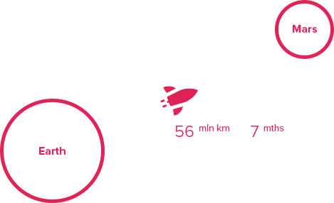

Марс. Вспомнить всё
Что такое Марс?
Планета Солнечной системы, названа в честь Марса — древнеримского бога войны. Иногда Марс называют «красной планетой» из-за красного оттенка поверхности, придаваемого ей оксидом железа.
Особенности планеты — наличие слабой атмосферы, состоящей в основном из углекислого газа, времена года, пылевые бури, сильная эрозия почв.
Где это? Как туда доехать?
Расстояние до Марса — почти 56 миллионов километров. Чтобы преодолеть такое расстояние, нужно лететь на межпланетном корабле 7-8 месяцев.
